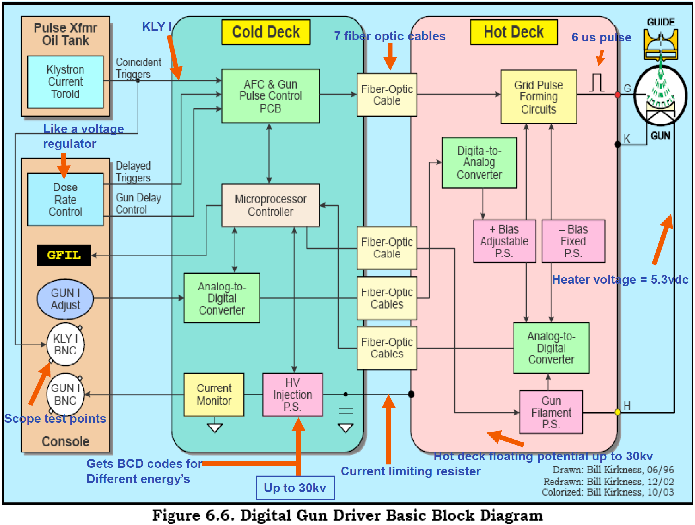
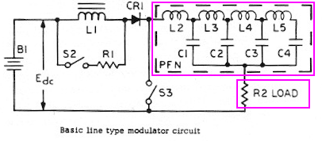
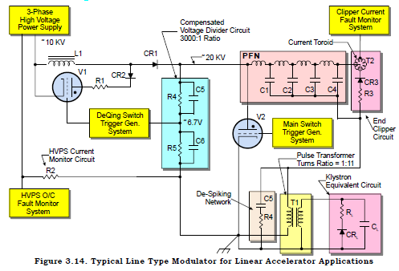
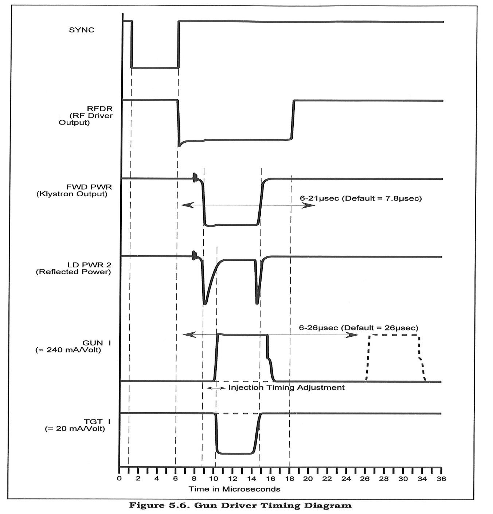

| Machine |
Head (Varian)
|
Electron Beam
|
|
↓
|
|
Target
|
|
↓
|
|
Beryllium Window
|
| ↓ |
|
Primary Collimator
|
| ↓ |
|
Flattening Filter / Scattering Foil
Carrousel
|
| ↓ |
|
Ion Chamber
|
| ↓ |
|
Secondary Collimator
|
| ↓ |
|
Tertiary Collimator
(Upper Jaw)
|
| ↓ |
|
Tertiary Collimator
(Lower Jaw)
|
Beryllium
- Low Density
- Low Atomic Mass
Jaw Convention
- Y jaw = upper
- X jax = lower
|
| Electron Gun |
Types:
- Diode Gun
- Directly heated
- Beam Current controlled by filament temperature and current
- Triode Gun
- Barium molecules placed in porous Tungsten
- Barium reduced operating temperature to ~ 700 °C (from 1750 °)
- Beam Current controlled by grid
- :) filament kept in rather stable temperature
General Features
- Vacuum
- Concave cathode ∴ Focusing Effect
- Cathode at -5k to -20kV
- Accelerator Guide at 0V
- Cathode Temperature needs to be high enough to maintain the space charge limited region
- Excessive electrons ready to be accelerated
Gun Desk
= Gun Driver
- Gun Filament Power Supply
- Cathode HV
- Grid Pulse
- Filament+Grid Bias Monitoring
- Issue GFIL Interlock

| Cold Desk |
Hot Desk |
| Referenced to Ground |
Referenced to Gun Cathode HV |
| HVPS → Hot Desk |
|
| RF System |
- Operating Frequency ~ 3GHz
- Pressurised SF6 Gas in Rectangular Transmission Waveguide
- Connecting to Highly Vacuumed Cylindrical Accelerating Waveguide
- Ceramic RF Window in between
Types:
| Type |
Magnetron |
Klystron |
|
RF Oscillator |
RF Amplifier |
| Input |
HV Pulse |
|
| Mechanism |
- cathode indirectly heated by filament
- even number resonant cavities
- e- travel toward the anode in circular motion imparted by B field
|
- thermionic e- generated in gun
- e- attracted to earth potential anode
- lower power RF from RF driver fill the buncher cavity
- the velocities of e- in buncher cavity are modulated by the RF frequency
- addition resonant cavities to increase the RF power gain
- amplified RF is extracted from the final catcher cavity
- e- in Klystron collected by the collector and dissipate their energy through water cooling
|
|
| Modulator |
Roles
- Convert 380 Vac to 10k Vdc
- Convert 10k Vdc to 150k Vdc for
- Accelerator Guide
- Diode Gun (LE LINAC)
- Gun Desk (HE LINAC)
Components
Simple Circuit

| R2 |
= RF System / Filament / Gun Desk |
| S3 |
= Main Thyratron
During Discharge
- Main Thyratron Closes
- Current flows from PFN → Main Thyratron → RF System Primary Transformer
|
| S2 + R1 |
= DeQing Thyratron
Output Dose Rate Control
- Receive signal from compensated voltage divider
- Closes DQ Thyratron
- current flow through DQ Thyratron instead of charging up the PFN
|
| L1 |
= Charging choke |
| CR1 |
= Charging diode |

| (C5, R4) + (C6, R5) |
= Compensated Voltage Divider |
| R2 |
= HVPSI Monitor Circuit
= Check for Positive Mismatch
|
| T2, CR3, R3 |
= End Clipper Circuit
= Check for Negative Mismatch
|
Impedance Matching
Z0 = Impedance of PFN
RL = Impedance of RF System
Mismatch Conditions
Z0 = RL
RL > Z0 (Positive Mismatch)
- After 2T, Charges still remain in PFN
i>Z 0 > RL (Negative Mismatch)
- After 2T, PFN is charged to the opposite sign
|
| Dose Rate Control |
| Low Energy (LE) |
- PRF (Pulse Repetition Frequency)
|
| High Energy (HE) |
- Injection Pulse coincides with RF Driver Pulse
|
General Features
- PRF for 6 MV = 360 Hz (higher E, 180 Hz)
- Nominal Maximum Dose = 600 MU min-1
- Sync Pulses comes as a train of 6 pulses
- One Sync Pulse:

- RFDR at 360Hz constantly
- Injection Pulse determine if one sync pulse ejects electron or not
|
| Bending Magnet |
| 0° |
|
| 90° |
- Permanent Magnet
- Compact
- NOT achromatic
- Focal spot elongated in GT plane
:( Prenumbra
|
| 270° |
- Achromatic
- Electro-magnets
:) different E different B field strength
- Energy Slits to control E ± 3%
-
\[ qvB = \frac{mv^2}{r} \]
|
| Slalom |
- 45°
+ 45°
+ 122.5°
|
|
| Peaking a LINAC |
- RF Power
|
RF Power Controlled by
-
For KLM (Klystron Linear Mode)
-
For non-KLM ( = satuation mode )
- PFNV (Pulse Forming Network Voltage)
- Shunt Tee
|
- AFC
|
- Auto Frequency Control
- Accelerator Waveguide Resoanance
|
- Gun I
|
- Gun Current which is controlled by Grid Voltage (not grid pulse duration)


|
- Bending Magnet
|
|
- Steering Coil
|
- Interlock: BUR R/T, POS R/T
|
- Accelerator Solenoid
|
|
|
OBI
(On-board Imaging) |
Hardware
- kV Panel
- MV Panel
- CBCT
- BrainLab's ExacTrac
MV Panel
- Use ~1mm Cu as to attenuate MV beam
- Use ASIC to amplify read-out signal
kV Panel
- Use robotic arms
- Shoulder/Arm/Elbow/Forearm/Wrist/Hand
CBCT (Cone Beam CT)
- broad beam
- more scattering than conventional fan beam CT
- reconstruct image using the whole panel
- do not have septums in between pixels like conventional CT
DRR (Digitally Reconstructed Radiography)
- shrink CT image to 1 direction
- add appropriate magnification to mimic x-ray (usually 1.4)
|
Winston Lutz Test
for Isocentre QA |
-- Critical for SRS
Isocentre of 3 axes
| Gantry |
|
|
|
|
< 0.5 mm radius |
|
| Collimator |
|
|
< 0.75 mm radius |
|
|
|
| Table |
|
|
|
Tools for Winston Lutz Test
- BB (Ball Bearing) Phantom
- Stereotactic Cone -OR- mMLC (micro MLC)
|
| Waveguide |
Resistive load -> energy loss as heat
standing wave -> RF power usually need to be maintained
travelling wave -> RF power tends to decrease along the waveguide
|